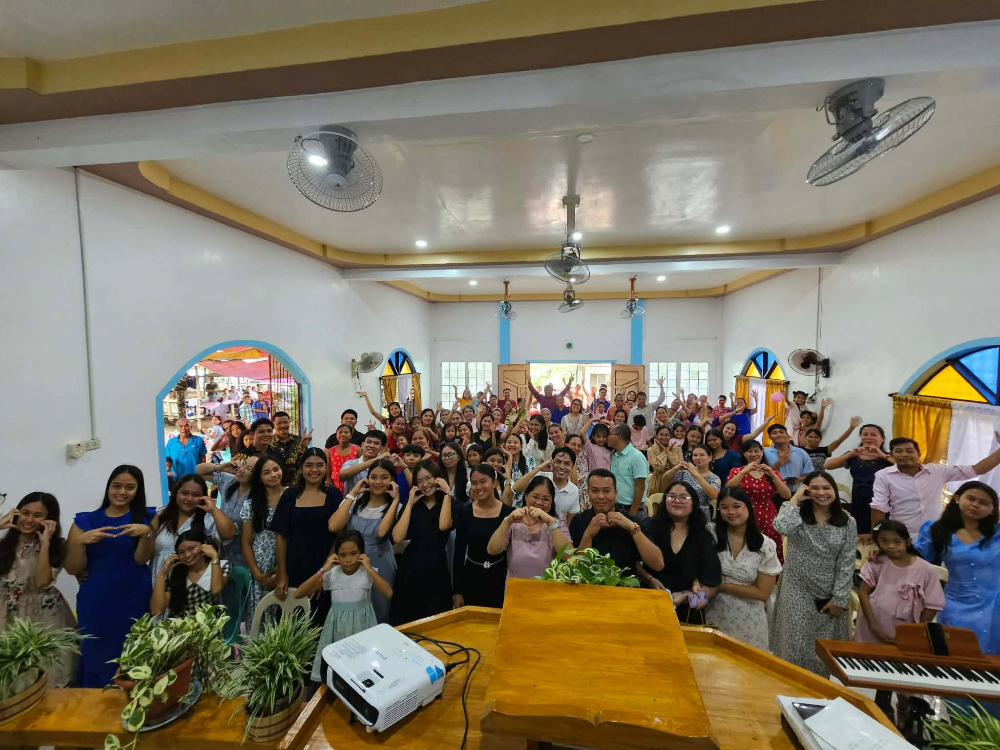
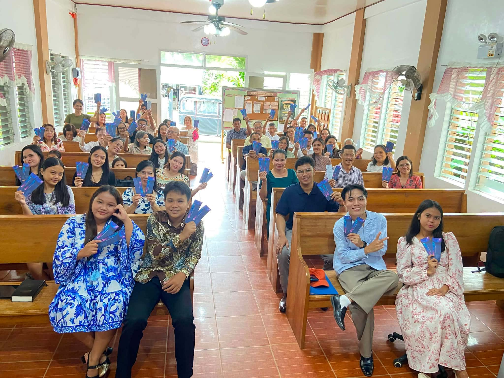
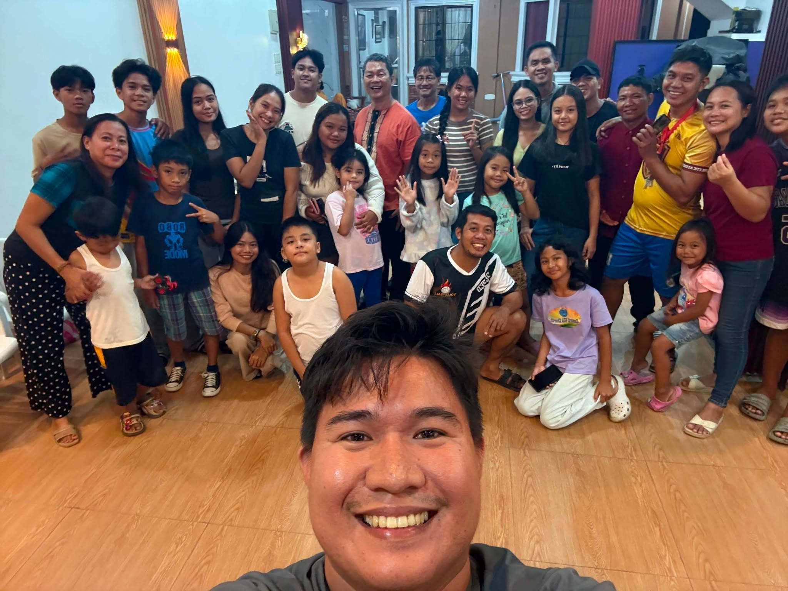
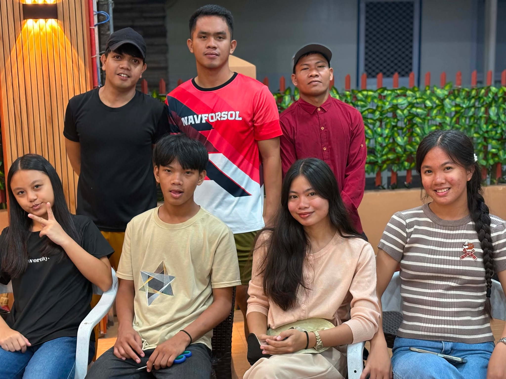
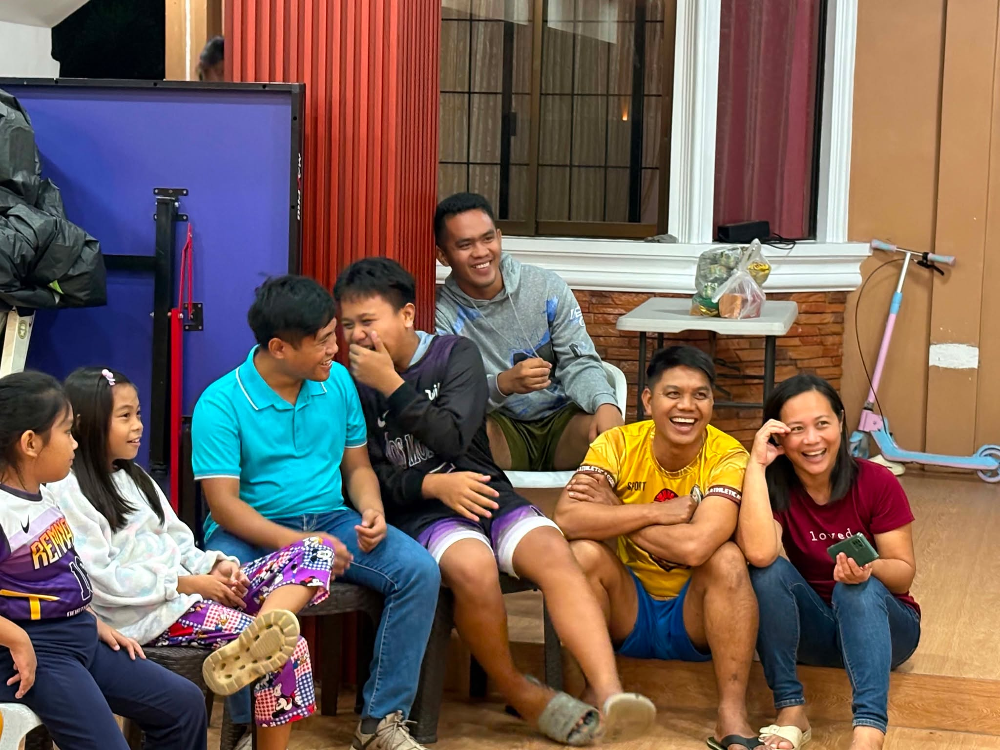
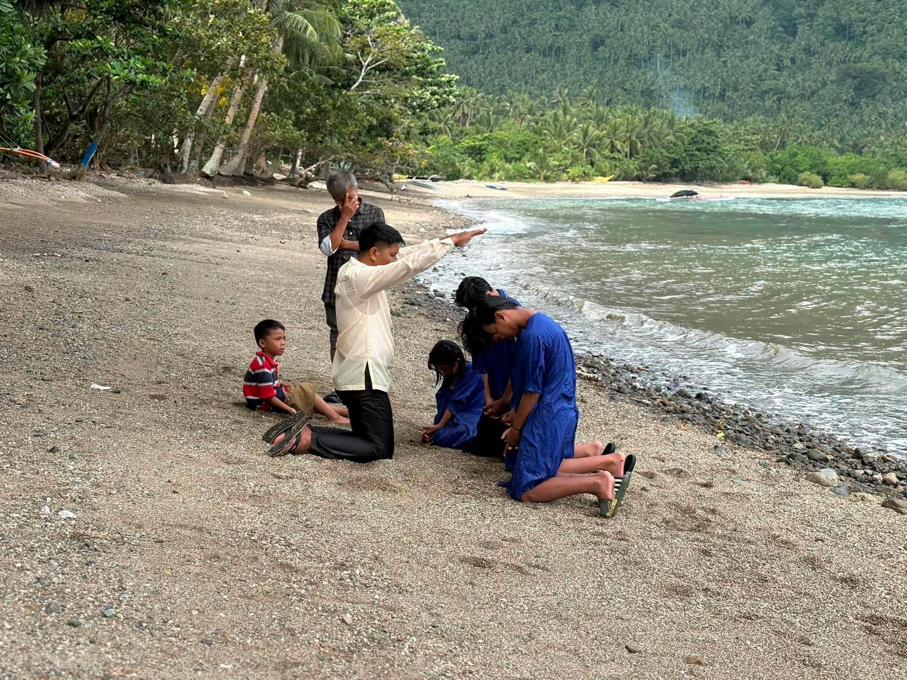

Lesson 1 - The Creator Speaks
This week on Hope Sabbath School, we begin a new series, "Prophets of God", with our first study, "The Creator Speaks".
United by Christ - Mission for all
No event posted yet.
Latest announcementNo announcement posted yet.
"Go ye into all the world, and preach the gospel to every creature."
Northern Tablas District (NTD) is part of the Romblon Adventist Mission of the Seventh-day Adventist Church. Our mission is to share the gospel of God as we prepare for the second coming of our Lord and Saviour Jesus Christ.






This week on Hope Sabbath School, we begin a new series, "Prophets of God", with our first study, "The Creator Speaks".